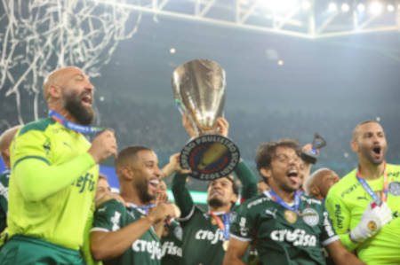

Até 1976 não se tem registro exato sobre a utilização de fabricantes fixos dos materiais esportivos. Consta a utilização das marcas Athleta e Hering (que utilizava sua linha esportiva denominada HerinGol). A partir de 1977 a alemã Adidas estampou sua marca na camisa do Palmeiras (vale ressaltar que o Palmeiras foi o primeiro clube brasileiro a utilizar o logotipo do fabricante de material esportivo na camisa). Entre 1993 e 2005, outras três fabricantes firmaram contrato com o clube: a Rhumell, a Reebok e a Diadora. A partir de 2006, a Adidas retornou ao alviverde e em 2010, a fabricante renovou o contrato até 2014.[103] Em 22 de março de 2018, o Palmeiras anunciou uma nova parceria com a Puma, que passa a valer a partir de janeiro de 2019.[104] Em junho de 2021, Palmeiras e Puma anunciaram a renovação do contrato até o final de 2024.
Lista de conquistas do Palmeiras de competições nacionais e internacionais de futebol organizadas ou reconhecidas pelas entidades internacionais oficiais do futebol. A lista traz os maiores títulos alviverdes, como os nacionais e estaduais oficializados pela CBF e pela FPF e os internacionais, como a Copa Libertadores da América (da CONMEBOL) e a Copa Rio, tratada em sua época como o título de campeão mundial de clubes por toda a imprensa brasileira e como o primeiro torneio de abrangência mundial com equipes europeias e sul-americanas, organizada com apoio do dirigente da FIFA Ottorino Barassi e posteriormente reconhecida pela FIFA em 2014 como a primeira competição entre clubes de Europa e América do Sul em nível mundial, sem, no entanto, ser considerado um Mundial oficial da entidade máxima do futebol internacional. Em 2021, na reportagem da FIFA sobre a final da Libertadores no Maracanã entre Palmeiras e Santos, depois de 70 anos do título palmeirense nesse mesmo estádio, a entidade contabilizou os então 10/8 títulos brasileiros de ambos, as duas Copas Intercontinentais do Santos (sem fazer menção ao status de mundial da competição) e a Copa Rio de 1951 do Palmeiras, que a entidade tratou como o "primeiro torneio intercontinental de clubes". Na mesma matéria, a FIFA também divulgou a postagem de 2016 do seu Instagram oficial onde a entidade designou o Palmeiras como o "primeiro campeão intercontinental mundial de clubes".[119] Após o bicampeonato continental, a AFC citou que apesar de fazer a sua estreia no mundial da FIFA, o Palmeiras já disputou uma Copa Intercontinental em 1999 e venceu o primeiro torneio intercontinental de clubes na Copa Rio em 1951.[120] Já a FIFA, divulgou uma matéria em seu site oficial da Copa do Mundo de Clubes apresentando uma parte da história do clube paulista, onde cita a Copa Rio de 1951 como o sonhado campeonato mundial discutido por anos por alguns dos maiores percursores do futebol — Jules Rimet (o então presidente da FIFA), Ottorino Barassi e Stanley Rous entre eles — que, por fim, foi realizado em 1951, e repostou pela segunda vez a matéria de 2016 com o termo mundial.
